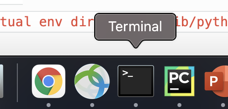
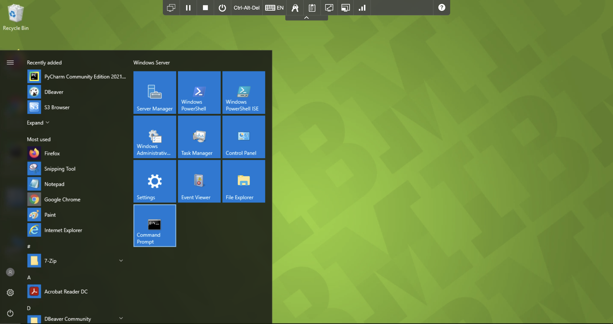
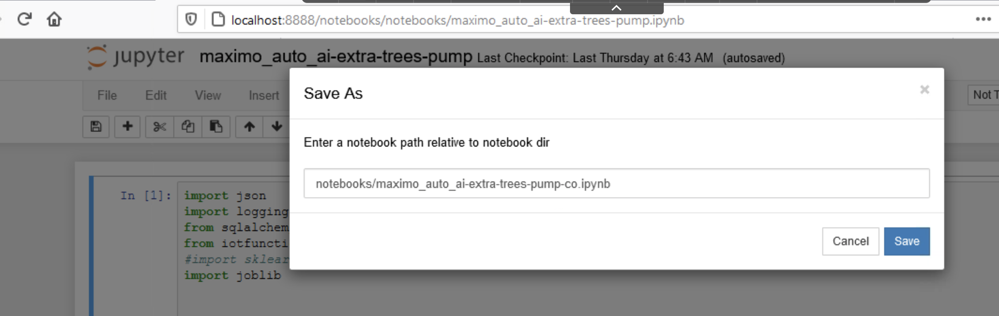
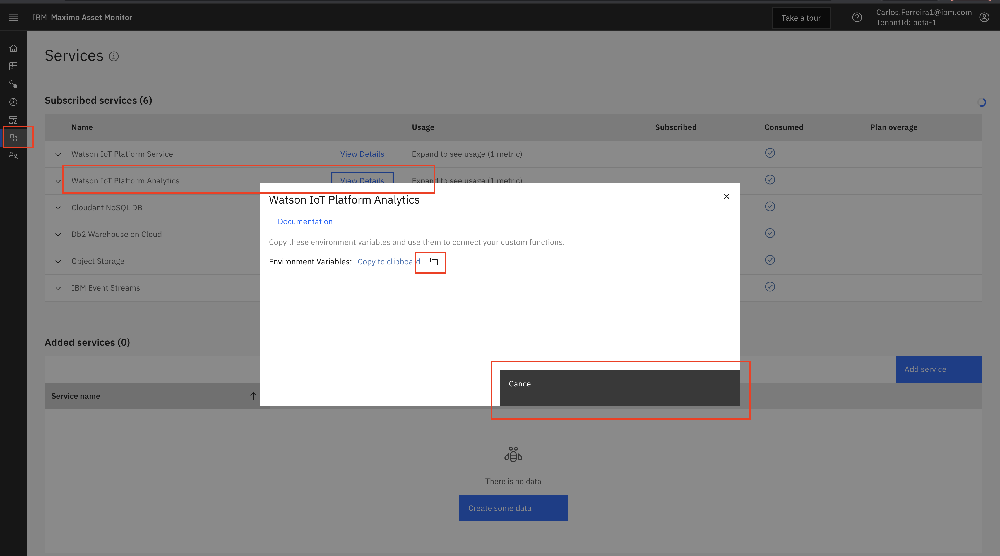
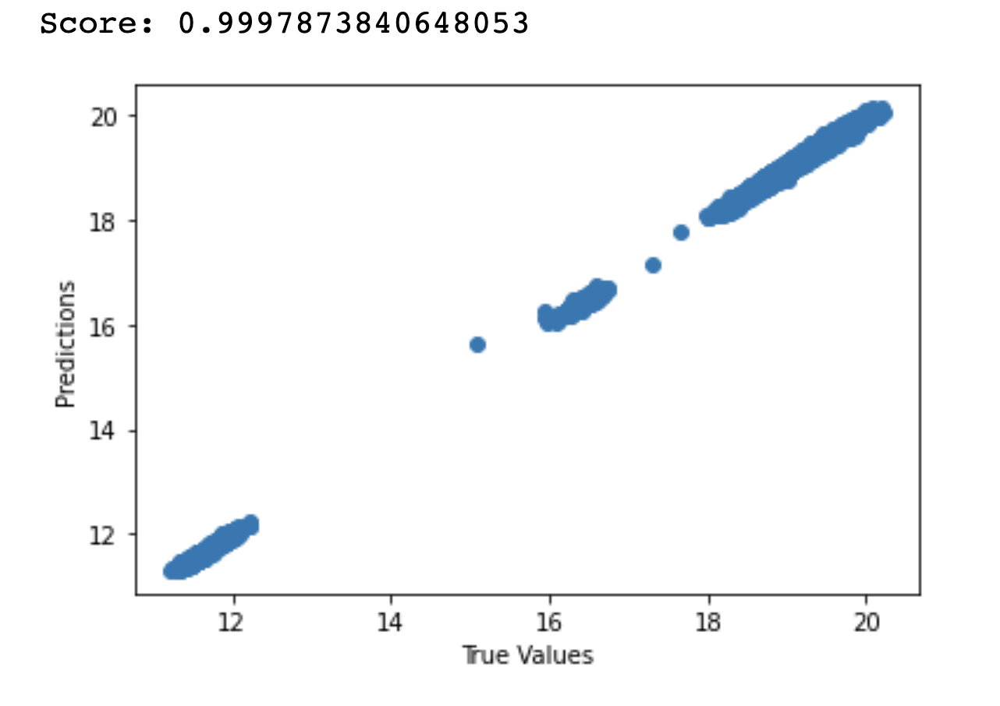
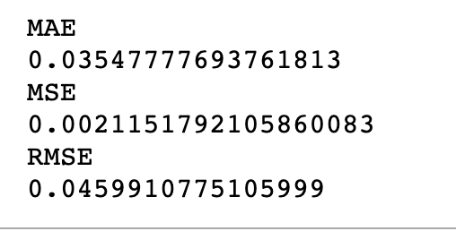

Train, Test and Save Prediction Model in Monitor
Monitor provides an APi to store and retrieve models that can be called using using a custom function to make predictions. This exercise include a sample Jupyter Notebook that shows you how to retrieve data from Monitor and a csv file to train a model. How to store a model and retrieve a model from Monitor make a prediction.
In these exercises using the provided Jupyter Notebook you will:
Train a Model
Note
If this lab is instructor led, he or she will provide you access to virtual image that has the Jupyter and the notebooks already installed. Skip steps 3, 4 and 8 if you are using Windows Virtual Machine.
-
Open a terminal window on Mac or a command prompt window on Windows.  
-
Activate your virtual environment.
Example for Mac
cd /Users/<"replace with your user id">/<"replace with your virtual environment name">/bin cd /Users/carlosferreira/ve/iot-python3/bin source activateExample for Windows
cd C:\Users\ibmuser\iot-python3 .\Scripts\activate.bat -
Change directory to your cloned github project directory.
Example for Mac
cd /Users/student01/MAS_AutoAIExample for Windows
cd C:\Users\ibmuser\iot-python3\maximo_autoai -
Apply export variables in terminal for DYLD_LIBRARY_PATH for DB2 jars on Mac OS X only.
Example for Mac
cd "<replace with the git cloned project directory name>" cd /Users/carlos.ferreira1ibm.com/ws/autoai export DYLD_LIBRARY_PATH=<"replace with your virtual env directory>"/lib/python3.7/site-packages/clidriver/lib:$DYLD_LIBRARY_PATH export DYLD_LIBRARY_PATH=/Users/carlosferreira/ve/iot-python3/lib/python3.7/site-packages/clidriver/lib:$DYLD_LIBRARY_PATH # Example -
Set PYTHONPATH to your project directory where you installed your virtual environment
Example for Mac
export PYTHONPATH="<replace with your root_project_directory>"/maximo_autoai export PYTHONPATH=/Users/carlosferreira/Documents/AutoAILabs/iot-python3/maximo_autoai -
Start the Jupyter Notebook service. and launch browser with Jupyter Notebook to edit Linear Regression Models.
jupyter notebook -
Jupyter will open in a browser tab. Open and study the project notebook named maximo_auto_ai-extra-trees-pump.ipynb using the instructions for the virtual environment you created. Click on
Notebooksfolder. Click on notebook namedmaximo_auto_ai-extra-trees-pump.ipyn -
Make a copy of the Project Notebook Rename the notebook, change the name of your notebook by appending your own initials to the end of the Jupyter Notebook name. In the jupyter notebook, select
filemenu andSave As. Enternotebooks/maximo_auto_ai-extra-trees-pump-co.ipynband clickSave.  -
This code in the notebook sets the Monitor credentials and entity type for your your instance of Monitor. Copy your credentials in Monitor from
Servicesmenu and Watson IOT Platform Analytics. Save it in a file namedbeta-1_credentials.jsonin the directory shown in the code below.

credentials = {} with open('/Users/carlos.ferreira1ibm.com/ws/autoai/beta-1_credentials.json', encoding='utf-8') as F: credentials = json.loads(F.read()) db = Database(credentials = credentials) db_schema = "BLUADMIN" # set if you are not using the default entity_type = 'pump_co' -
This code in the notebook build a model for each pump. The
Entity_Type_IDuniquely identifies each asset the model should be trained for. Set theEntity_Type_IDthe model should be associated with. There are two ways to search the custom function logs in Cloud Object Storage using Cyberduck that are described in the exercise named Download, Install and Configure CyberDuck for View Logs in Monitor
To find yourEntity_Type_IDin the logs in Monitor, launch Cyberduck, and locate your pump, e.g. pump_co. Unzip and open one of the *.gz files there (e.g. 111012.gz) and search for 'entity_type_id'. It should be on the first row of the log files.entity_type = 'pump_cp' entity_type_id = 19305 entity_name = '04714B6037F8' a_df = r_df.loc[r_df['device_id'] == entity_name, :] print ('a_df.shape 1') print (a_df.shape) print (a_df) -
This code in the notebook splits the data into train and test subsets.
from sklearn.model_selection import train_test_split X_train, X_test, y_train, y_test = train_test_split(x, y, test_size=0.20, random_state=42) -
This code in the notebook creates the model using the train data.
extra_trees_model = ExtraTreesRegressor() extra_trees_model.fit(X_train, y_train.values.ravel() )
Test a Model
-
This code in the notebook tests the model using the test data to make a prediction. It should return a power prediction = 11.471
row = [[ 971.0, 989.633, 331.0, 26.44]] yhat = extra_trees_model.predict(row) x_pos_predictions = extra_trees_model.predict(X_test) -
This code in the notebook plots the prediction accuracy by comparing prediction values versus true values. 
plt.scatter(y_test, x_pos_predictions) plt.xlabel('True Values') plt.ylabel('Predictions') -
This code in the notebook calculates the model accuracy. Smaller values indicate better accuracy making predictions. 
from sklearn import metrics print("Mean Absolute Error") print(metrics.mean_absolute_error(y_test, x_pos_predictions)) print("Mean Square Error") print(metrics.mean_squared_error(y_test, x_pos_predictions)) print("Root Mean Square Error") print(np.sqrt(metrics.mean_squared_error(y_test, x_pos_predictions)))
Save Model to Monitor.
In the notebook, change the name of your model by replacing co with your own initials power_extra_trees_model_co.mod
-
This code in the notebook saves the model to disk locally, re-loads the mode into memory and tries to make a prediction.
import pickle model_file_path = '/Users/carlos.ferreira1ibm.com/ws/autoai/models/power_random_forest.mod' pickle.dump(extra_trees_model, open(model_file_path, 'wb')) model = pickle.load(open(model_file_path, 'rb')) row = [[1160.0, 1190.626, 438.0, 33.16]] yhat = model.predict(row) -
This code in the notebook saves the model in Monitor. Make sure you replace the
coin the model name to your own initialspower_extra_trees_model_co.modfrom iotfunctions.db import Database import json credentials = {} credential_file = '/Users/carlos.ferreira1ibm.com/ws/autoai/beta-1_credentials.json' with open(credential_file, encoding='utf-8') as F: credentials = json.loads(F.read()) db_ctp = Database(credentials=credentials, entity_type_id=entity_type_id ) from datetime import datetime model_name = 'power_extra_trees_model_co.mod' try: feature_vector = ['speed', 'flow', 'voltage', 'CURRENT' ] model_dict = { 'model': model, 'feature_vector': feature_vector, 'timesstamp' : datetime.now().strftime("%Y%m%d%H%M%S") } db_ctp.model_store.store_model(model_name, model_dict) except Exception as e: print('Model store failed with ' + str(e)) pass
Retrieve a Model and Make Predictions
-
This code in the notebook retrieves the model from Monitor and tries to make a prediction.
try: model_dict = db_ctp.model_store.retrieve_model(model_name) print("load model") monitor_model = model_dict["model"] print(monitor_model) feature_vector = model_dict["feature_vector"] print(feature_vector) feature_vector = model_dict["timesstamp"] print(feature_vector) except Exception as e: print("Model retrieval failed with " + str(e)) pass
Congratulations you have learned how to use the provided Jupyter notebook to train test and deploy a prediction model
to Monitor. For more resource intensive models you should deploy them to a separate runtime service to make predictions.
In the next lab exercise you will register the provided Monitor Custom function that will allow you to send the pump
metrics data to your deployed model to make a prediction.